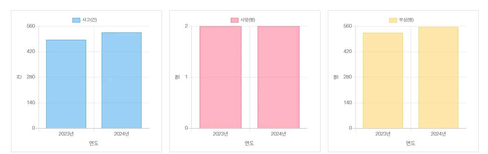
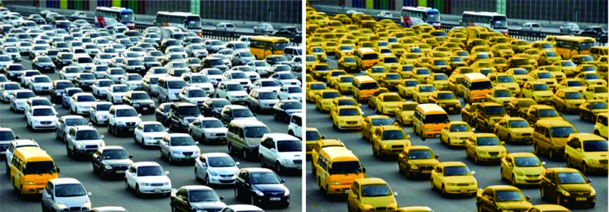
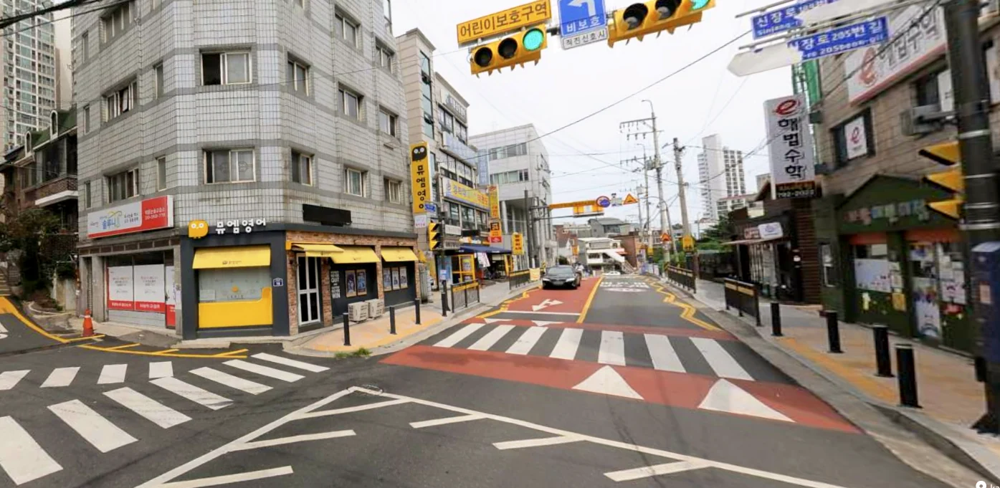
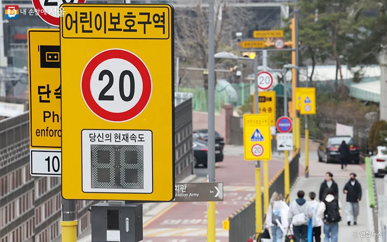
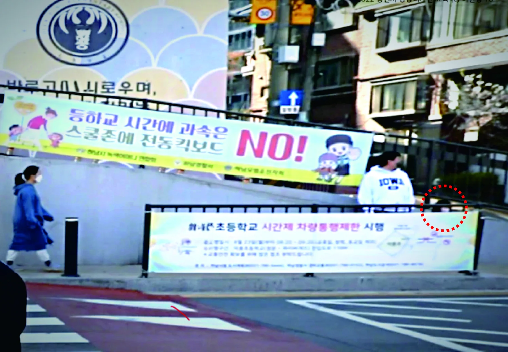
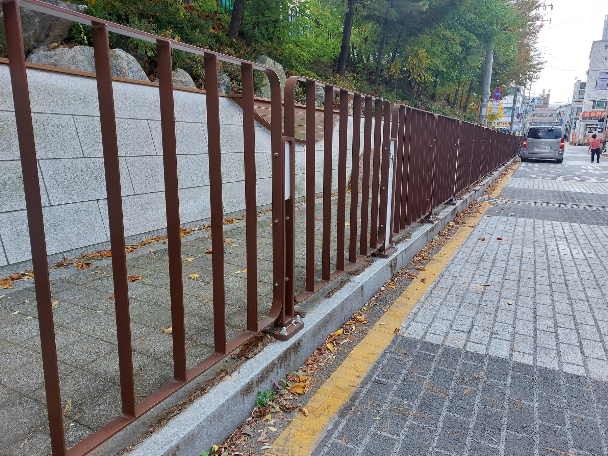

노란색 스쿨존, 더 잘 만드는 방법
노란색 스쿨존. 더 잘 만드는 방법
이현성 | 홍익대학교 공공디자인전공 교수, SEDG 공공디자인 대표소장 (armula@hongik.ac.kr)
왜 어린이보호구역은 노란색일까?
1995년 형식적인 수준의 어린이보호구역 처음 지정되고 참여정부 때인 2003년부터 어린이 교통안전 대책의 일환으로 지금 우리가 보고 있는 어린이보호구역 개선사업이 행정안전부 주관으로 추진되었다. 어린이보호구역에 사용되는 안전색채는 암적색 노면 아스팔트와 노란색 정보 시설인데 어린이와 관련한 노란색은 도대체 언제 누가 정하게 된 걸까?
안전색의 대명사인 노란색은 약 100년 전에 지정된 색채이다. 디자인계에선 종종 스쿨버스의 아버지( Father of the Yellow School Bus)라 불리는 프랭크 W. 시르 박사(Frank W. Cyr)가 어린이 안전을 위해 노란색을 지정한 데서 시작한다. 프랭크 W. 시르 박사가 1939년 록펠러 재단의 보조금으로 자금을 지원받아 당시 48개 주의 교통 담당자와 스쿨버스 제조 및 페인트 회사의 전문가를 대상으로 최초의 '학교 교통 워크샵'을 조직하고, 스쿨버스의 색을 노란색으로 정한 것이 그 시초라 볼 수 있다. 이 색상은 이른 아침이나 늦은 오후의 어둑한 시간대에 검은색 글씨가 가장 잘 보이기 때문에 선택되었는데 초기에 시르박사는 안전색채가 노란색보다는 주황색에 더 가깝다고 생각했다 한다. 사실 지금도 노란색과 주황색 사이는 긴 색 파장을 가지고 있어 인식할 때 진출도가 뛰어나다.
우리나라에서 어린이보호구역(스쿨존)에 노란색이 적용되기 시작한 것은 1990년대 후반으로 지금까지 노란색 횡단보도, 노란색 펜스, 옐로카펫에 이르기까지 일련의 시각적 안전장치가 전국 단위로 확산되면서, 노란색은 어린이 안전의 상징적 색채로 자리 잡았다. 2023년 7월 도로교통법 시행규칙 개정 때문에 어린이보호구역 내 횡단보도의 노란색 설치가 법적으로 의무화된 이후, 이러한 경향은 더욱 가속화되고 있다. 이렇듯 스쿨존의 대표적 색채인 노란색은 1939년 어린이의 안전을 고민한 선구자들에 의해 선택되어 현재에 이르러서는 안전색채의 대명사로 자리 잡게 된다.
노란색이면 다 안전해질까?
현재의 여러 자료를 보면 노란색의 적극적 확산이 곧 안전의 극대화를 직접적으로 의미하지는 않는다. 도로교통공단 교통사고분석시스템에 따르면 어린이보호구역 내 어린이 교통사고 부상자 건수는 2023년 523명에서 2024년 556명으로 오히려 6.3% 증가 추세에 있다.
그림 1 어린이보호구역 내 어린이 교통사고 현황 (출처 : TAAS 교통사고분석시스템 taas.koroad.or.kr)

이러한 내용을 참고해 볼 때 노란색의 안전색채의 적용이 무조건 안전을 보장해 주는 것이 아니라는 것을 유추해 볼 수 있다. 안전색채가 안전체계로서 기능하기 위해서는 시각적으로 구분되고, 인지적으로 주의를 환기할 수 있는 다양한 조건이 충족되어야 한다. 본 칼럼에서는 어린이보호구역에 적용된 노란색 시스템의 디자인 원리를 지각 심리학적 관점에서 살펴보고, 인지 정보의 통합적 활용 전략과 시야 확보를 위한 디자인에 대해 3가지 관점에서 고찰해 보고자 한다.
1. 안전색채를 볼 때는 항상 배경과 함께 본다.
“ 배경에 노란색은 최소화하여 강조 색의 노란색이 더 잘 보이게”
안전색채의 효과를 논의할 때 가장 먼저 검토해야 할 원리는 게슈탈트 심리학 개념 중 하나인 전경-배경(Figure-Ground)이다. 이 개념은 사람이 시각 정보를 인식할 때 대상을 뚜렷한 전경(Figure)과 나머지 배경(Ground)으로 분리하여 지각하는 본능적 원리를 말하는데 전경이 배경으로부터 시각적으로 분리될 때 비로소 대상의 시인성이 확보된다. 밤하늘의 별이 낮에는 보이지 않는 이유는 별의 광도가 변한 것이 아니라 주변의 높은 밝기가 별의 휘도를 상쇄하기 때문이다. 동일한 논리가 스쿨존의 노란색에도 적용된다.
그림 2 스쿨버스가 노란색이라서 구별되는 게 아니라 배경색이 노란색이 아니라서 눈에 띄는 것이다. (사진: AI 이미지)

현재 어린이보호구역에서 노란색은 횡단보도, 펜스, 볼라드, 노면 표시 등에 광범위하게 사용되고 있다. 문제는 이 노란색이 작동하는 시각적 맥락에 있다. 필자는 녹시율(綠視率)의 개념을 응용하여 '노시율(黃視率)', 즉 특정 시점에서 노란색이 전체 시야에서 차지하는 면적 비율이라는 분석 틀을 제안한 바 있다. 스쿨존 현장을 촬영하여 노란색의 전체적인 비율인 노시율을 측정해 보면, 공공 안전 정보로서의 노란색보다 주변 상업 간판, 광고물, 민간 시설물에 사용된 고채도 색채의 비율이 훨씬 높은 사례가 빈번하게 관찰된다. 빨간색, 파란색, 녹색 등 삼원색에 가까운 고채도 색상이 상업적 홍보에 무분별하게 사용됨으로써, 산업안전보건법에 의해 지정되고 스쿨존의 안전 시설에 적용된 안전색채가 실제 도시 환경에서는 실질적으로 그 역할을 하기가 어렵다.
그림 3 안전 정보의 노란색(강조색)보다 더 잘 보이는 간판의 노란색(배경색) (사진:이현성)

안전을 위해 노란색 자체의 적용을 확대하는 것만으로는 충분하지 않으며, 배경 색채의 통제가 반드시 병행되어야 한다. 예를 들어 학교 교문 반경 50ｍ 이내 또는 사고 다발 구간에서는 주변 시설물의 색채를 저명도·저채도로 유도하는 배색 관리 전략이 필요하다. 전후 비교 분석을 통해 노란색의 가시성 및 시인성의 정량적 개선 정도를 측정하고, 이를 사고 감소율과 연계한 실증적 검증 체계를 구축하는 것이 중요하다.
2. 글씨-그림-색채 인식의 3박자를 잘 사용하자
“인식속도가 가장 빠른 색채는 멀리서 인식할 수 있게, 인식속도가 가장 느린 글자는 가까이서 정확하게 전달해야 할 때”
안전 정보의 전달 매체는 크게 세 가지로 구분된다. 텍스트(문자), 아이콘(그래픽·픽토그램), 색채가 그것이다. 이 세 매체는 정보 전달의 정확성과 인지 속도에 있어 상반된 특성을 보인다. 텍스트는 '감속 운행'과 같이 직접적이고 명시적인 정보를 전달하므로 정확성이 가장 높지만 인지하는데 속도가 상대적으로 느리다. 반면 색채는 감각적 차원에서 즉각적으로 인지되어 처리 속도가 가장 빠르지만, 전달하는 정보의 구체성은 제한적이다. 아이콘은 양자의 중간에 위치하며, 화장실 표시나 횡단보도 표시처럼 국제적 통용성을 갖춘 ISO 규정 체계가 마련되어 있어 문화권을 초월한 정보 전달이 가능하다.
그림 4 텍스트(문자), 아이콘(그래픽·픽토그램), 색채의 인지속도를 고려한 전략적 적용 필요 (사진: 연합뉴스)

이러한 특성의 차이는 거리별·상황별 위계적 설계로 연결되어야 한다. 스쿨존 진입 전 원거리에서는 색채 정보를 통해 사전 인지를 유도하고, 중간 거리에서는 아이콘과 그래픽을 통해 구체적 행동 지침을 전달하며, 핵심 위험 구간에서는 텍스트·아이콘·색채 세 가지를 동시에 배치하여 직접적이고 즉각적인 정보를 전달하는 단계적 구조가 필요하다. 이를 위해 안전 정보 툴키트의 개발과 체계적 가이드라인의 마련이 요구된다. 이러한 행동 유도형 디자인의 원리를 스쿨존에 체계적으로 적용한다면, 색채를 포함한 복합 감각 요소가 통합된 '노란 경험(Yellow Experience)' 환경을 구축할 수 있다.
3. 안전하게 만들자고 아이들을 가리지 말자.
스쿨존의 안전색채와 함께 반드시 검토되어야 할 디자인 요소가 자연 시야 확보이다. 승용차 운전자의 평균 눈높이는 지면으로부터 약 1~1.2m이며, 이는 초등학교 저학년 아동의 신장과 거의 일치한다. 따라서 운전자의 시야 수평선 상에 아동이 정확히 위치하게 되는데, 이 높이대에 시야를 차단하는 장애물이 존재할 경우 아동의 시인성은 급격히 저하된다.
그림 5 안전을 위해 설치한 플랜카드는 아이러니하게 빨간색 테두리 안의 아이를 못 보게 만든다. (사진:이현성)

현행 스쿨존에서 이 문제를 야기하는 대표적 사례가 펜스에 부착된 현수막이다. 아이러니하게도 '어린이를 보호합시다', '스쿨존 속도를 지킵시다'와 같은 안전 문구가 적힌 현수막이 바닥부터 약 1ｍ 높이를 차폐함으로써, 정작 보호 대상인 아동의 존재를 운전자로부터 보이지 않게 하는 결과를 초래하고 있다. 필자는 이 문제의 해결을 위해 '시각 클리어런스 존(Visual Clearance Zone)' 개념의 도입을 제안하고 있다. 이는 지면 30cm부터 높이 1.2m까지의 영역을 시야 차폐물이 없는 투명 구간으로 확보하여, 보행자의 움직임이 운전자에게 상시 노출되도록 하는 디자인 원칙이다. 현수막 등 게시물은 최소 1.5m 이상의 높이에 설치하여 하부 시야를 확보하는 방안이 병행되어야 한다.
펜스의 구조 역시 안전을 위한 인지를 위해 재검토가 필요하다. 현재 널리 사용되는 새로 살 펜스는 사선 방향에서 접근하는 운전자의 시야에서 살 간격의 밀도감이 중첩되어 보행로의 아동을 가리는 현상이 발생한다. 반면 가로 살 구조는 수직으로 서 있는 아동의 형태와 교차하여 시인성이 향상되며, 측면에서도 시야 차폐면이 형성되지 않는 이점이 있다. 이러한 설계적 고려는 입면(立面)에 한정되지 않고 평면적 차원으로도 확장될 수 있다. 횡단보도 반경 10~20ｍ 이내에서 펜스, 분전함, 가로수 등 시야를 차단할 수 있는 시설물의 배치를 제한함으로써, 아동의 돌발 행동에 대한 운전자의 대응 시간을 확보할 수 있다.
그림 6 새로 살 패턴의 휀스는 보행로의 아이들을 자연스러운 시야 노출을 방해한다.

노란색 안전 문화 ‘옐로 컬쳐(Yellow Culture)’를 위해
도로교통공단의 연구에 따르면, 옐로카펫이 설치된 횡단보도에서 운전자의 아동 시인성은 34%에서 90%로 향상되었으며, 해당 구간의 평균 주행속도는 33.6km/h에서 16km/h로 감소하였다. 횡단보도 대기선 내 보행자 체류 비율 역시 66.7%에서 91.4%로 상승하여, 아동이 안전 구역 내에서 신호를 기다리는 행태가 유도되었음이 확인되었다. 도로교통공단의 설문조사에서도 성인 응답자의 76.4%가 옐로카펫 인지 시 평소보다 감속하였다고 응답하였으며, 14.6%는 일시 정지 후 좌우를 확인하였다고 답하여, 시각적 넛지의 행동 변화 유도 효과가 통계적으로 입증되었다. 특히 가상현실(VR) 환경에서 수행된 드라이빙 시뮬레이터 실험에서는 어린이 돌발 출현 시나리오에서 옐로카펫 유무에 따른 운전자 반응 차이가 극명하게 나타났다.
이러한 우수사례는 노란색의 무조건인 사용이 아니라 운전자의 인지성, 심리적 인지효과, 영역성 조성, 행동유도 효과 등의 복합적인 적용을 기반으로 하였을 때 나타난다. 어린이보호구역의 안전색채 전략은 세 가지 차원에서 재구성되어야 한다. 첫째, 노란색의 가시성을 보장하기 위한 배경 색채 관리 체계의 구축이다. 둘째, 색채·아이콘·텍스트의 위계적 배치 및 다감각 요소의 통합을 통한 복합 인지 디자인의 적용이다. 셋째, 시각 클리어런스 존 개념에 기반한 운전자 시야 확보 설계의 제도화이다.
안전색채의 전략과 더불어 궁극적 안전을 위해서 참여 거버넌스 기반의 안전 문화가 함께 하는 것이 중요하다. 예를 들어 스쿨존 주변 배색 협약, 현수막 게시 자제 캠페인, 안전 디자인 시민 교육 프로그램 등과 같은 통합적 안전 문화 플랫폼으로 확장되어야 한다. 궁극적으로 필자가 제안하는 것은 '옐로 컬처(Yellow Culture)'라는 개념이다. 이는 노란색을 단순한 색상 코드가 아닌, 어린이 안전을 향한 사회적 합의와 실천의 상징체계로 승격시키는 것을 의미한다. 노란 소리, 노란 느낌, 노란 경험이라는 다감각적 확장을 통해 시각을 넘어선 안전의 총체적 환경을 구축하고, 이를 K-안전 디자인의 고유한 안전 문화로 정립해 나가는 것이다.
1
이 글의 판본과 수록 정보 ＋
파일명에 이현성 표기; 실제 저자·기여 확인 필요
원고 제목과 지면 제목 「눈으로 먼저 보이는 어린이 보호구역」을 함께 연결. 「신호등」 3+4월호 교통안전 리포트 확인 요청 PDF를 연결. 지면 제목: 「눈으로 먼저 보이는 어린이 보호구역 — 더 안전하게, 더 잘 만들 수 있을까?」. 본문에 이현성 명의가 있으나 실제 게재 확정 여부는 미확인.
- 수록 자료
- 20260208 신호등 안전디자인 원고_이현성.hwp
- 자료의 날짜 단서
- 2026-02-08 · 실제 발표일과 다를 수 있습니다.
- 관련 파일
- 5개 / 서로 다른 본문 5종